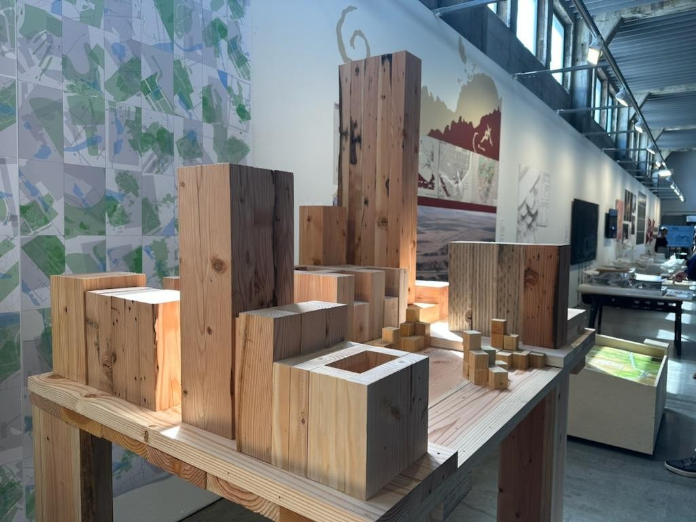
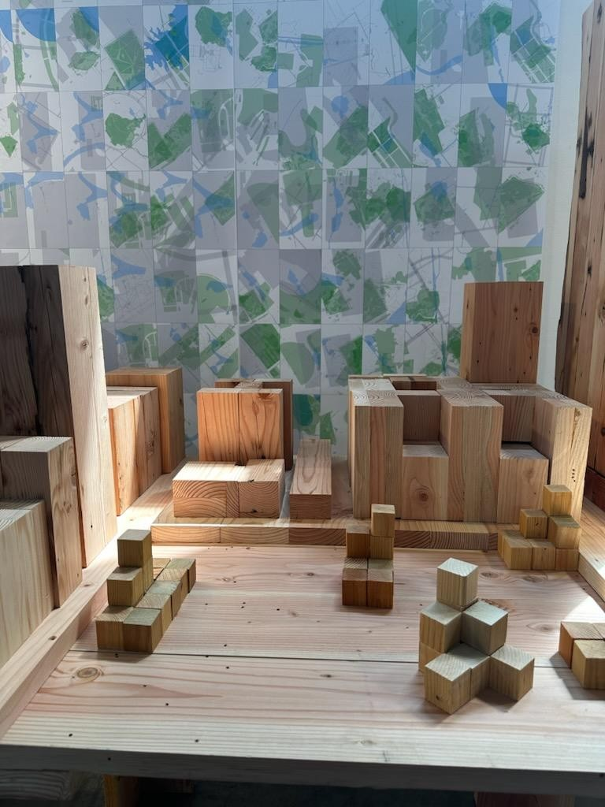
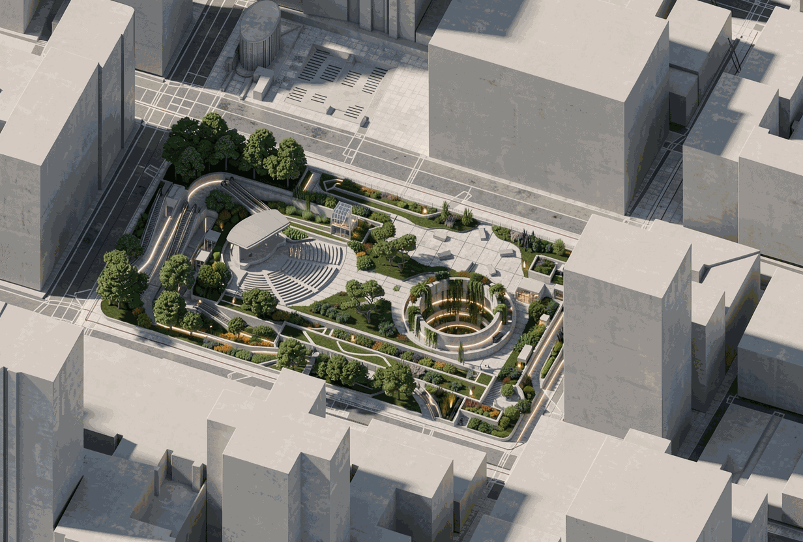
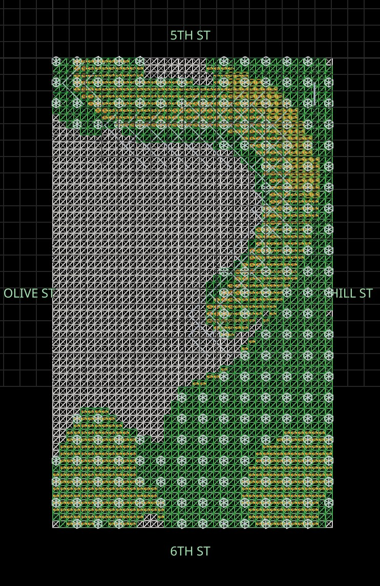
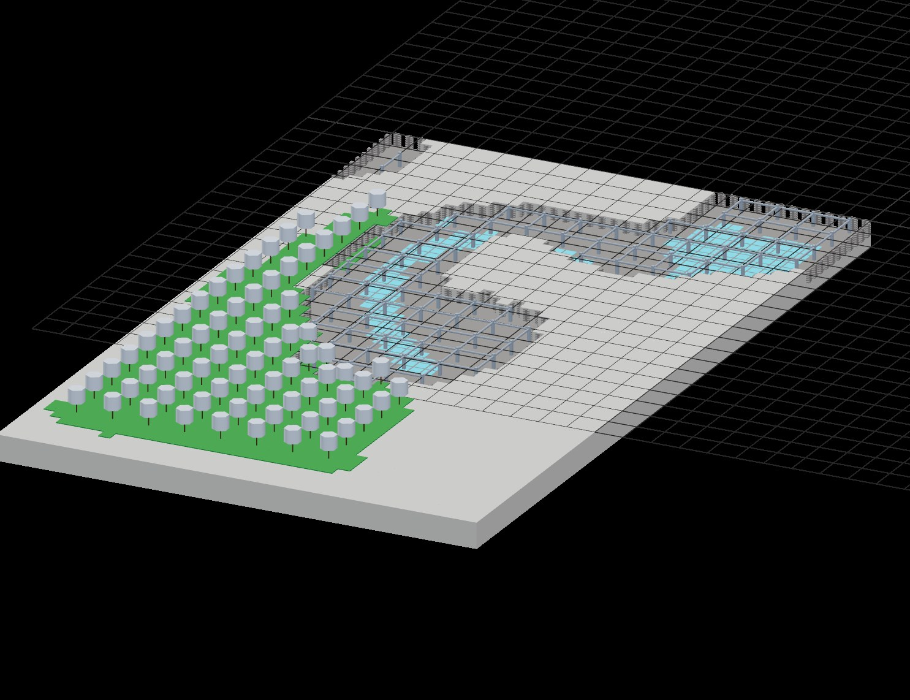
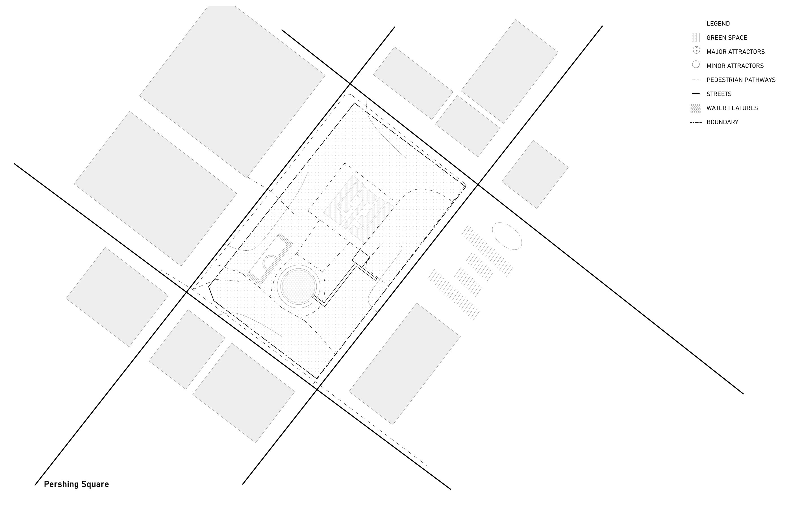

memoryMachine
memoryMachine is a computational design framework that transforms civic sentiment and archival memory into operative spatial data to revitalize under-utilized public space. Using Pershing Square in Downtown Los Angeles as a test bed—a civic site defined by a history of top-down, disconnected redesigns—the project proposes an adaptive spatial infrastructure in place of the fixed, one-time master plan.
At its core, a multimodal data ingestion engine aggregates web reviews, archival records, and spatial metrics, pairing qualitative sentiment with physical variables such as microclimate, canopy coverage, and circulation flows. To ensure equitable representation, the engine applies demographic weighting to mitigate digital access bias. These inputs are translated into spatial density fields and programmatic adjacencies, generating interventions—such as terraced landforms, water systems, and subterranean transit connections—as evidence-based spatial responses rather than predetermined formal gestures.
By merging expert analysis with experiential civic data, memoryMachine repositions the architect from sole author to system mediator. Public input shifts from a one-off consultation phase into a permanent, operative design parameter. The result is a self-regulating spatial framework that ingests usage patterns to continuously re-evaluate the site and adapt through phased physical interventions—establishing a democratic model in which public space evolves alongside the community it serves.





